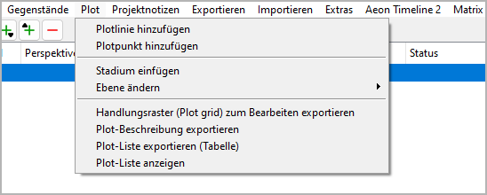
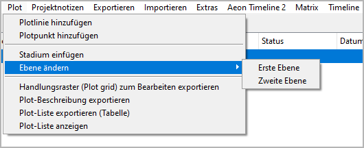
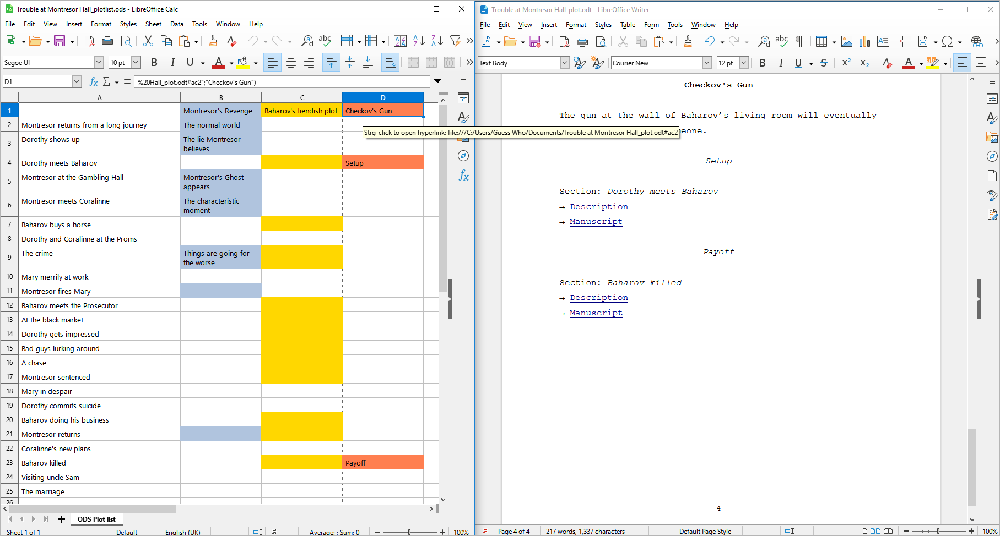
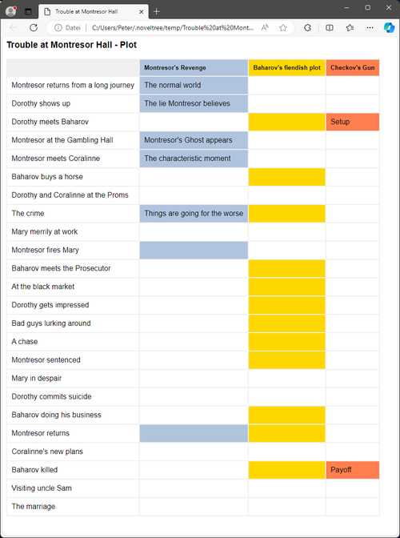

Plot-Menü
Plot elements-Operationen

Plotlinie hinzufügen
Hinzufügen a new Plotlinie to the story
Mit Plot > Hinzufügen Plotlinie kann man add a Projektnotiz to the tree .
Bemerkung
If a Plotlinie is selected, the new item is placed after the selected one.
Otherwise, the new Plotlinie is placed at the last position.
The new Plotlinie has an auto-generated Titel. You can change it in the right pane.
Plotpunkt hinzufügen
Hinzufügen a new Plotpunkt to the selected Plotlinie
Mit Plot > Plotpunkt hinzufügen kann man add a plot point to a Plotlinie.
Bemerkung
If a plot point is selected, the new plot point is placed after the selected one.
If a Plotlinie is selected, the new plot point is placed at the last position.
Otherwise, no new plot point is generated.
The new plot point has an auto-generated Titel. You can change it in the right pane.
Stadium einfügen
Insert a stage between the sections
Mit Plot > Stadium einfügen kann man insert a stage after the selected chapter or section.
Hinweis
By default, the new stage is on the second level. You can change the level to first (see below).
Ebene ändern
Change the level of the selected stages
Mit Plot > Ebene ändern kann man change the level of the selected stages.

Erste Ebene is displayed in bold face.
Zweite Ebene is displayed in regular font.
Bemerkung
The stage level is only for visual distinction. It has no influence on the program functions.
Handlungsraster (Plot grid) zum Bearbeiten exportieren
Ein ODS-Dokument exportieren, das bearbeitet und zurückgelesen werden kann
Mit Plot > Handlungsraster (Plot grid) zum Bearbeiten exportieren kann man create a spreadsheet as described in the Plotting with novelibre chapter, with a row per section, containing the following data:
The sequential section number as a hyperlink to the section in the Manuskript (falls vorhanden)
Erzähldatum
Erzählzeit
Tag
Abschnittstitel
Abschnittsbeschreibung
Perspektive
One column per Plotlinie with the section’s Plotlinie notes
Tags
A/R/B
Ziel/Reaktion/(benutzerdefiniert)
Konflikt/Dilemma/(benutzerdefiniert)
Ausgang/Entscheidung/(benutzerdefiniert)
Abschnittsnotizen
Bemerkung
Only „normal“ sections appear in the plot grid. Abschnitte of the „Unbenutzt“ type are omitted.
Der Dateinamenszusatz lautet _grid_tmp.
Bemerkung
You can reorder, hide or delete columns and rows without affecting the reimport. Only the first column and the first row, which are hidden by default, must not be changed as they contain the structural information for the import.
Erzählstruktur-Beschreibung zum Bearbeiten exportieren
Ein ODT-Dokument exportieren, das bearbeitet und zurückgelesen werden kann
Mit Plot > Erzählstruktur-Beschreibung zum Bearbeiten exportieren,
you can create a text document that contains
all stages, each with description.
File name suffix is _structure_tmp.
Hinweis
This is also a full synopsis, with the emphasis on the dramaturgical structure.
Plotlinienbeschreibungen zum Bearbeiten exportieren
Ein ODT-Dokument exportieren, das bearbeitet und zurückgelesen werden kann
Mit Plot > Plotlinienbeschreibungen zum Bearbeiten exportieren,
you can create a text document that contains
stages, plot lines, and plot points, each with description.
The plot points are linked to the manuscript and to the section descriptions.
File name suffix is _plotlines_tmp.
Plot-Liste exportieren (Tabelle)
Ein ODS-Dokument exportieren
Mit Plot > Plot-Liste exportieren (Tabelle)
kann man create a spreadsheet with a row for each section
and a column for each Plotlinie.
Associations between Plotlinien and sections are color-highlighted.
Plotpunkt Titels are displayed.
Der Dateinamenszusatz lautet _plotlist.
Hinweis
The Plotlinie Titels and the section Titels are hyperlinked to the respective descriptions in other exported documents, if any.

LibreOffice Screenshot. Note the hyperlink from the Plotlinie Titel in the plot list (left) to the Plotlinie in the plot description (right).
Wichtig
Hyperlinks in ODS spreadsheets are absolute within the file system, so they might not work after moving the location of your project file to another folder or computer. In this case, you will have to export the spreadsheet anew.
Plot-Liste anzeigen
Einen HTML-Report mit Plot-elementen anzeigen
Mit Plot > Plot-Liste anzeigen You can create a list-formatted HTML file that contains a plot list similar to the ODS plot list (see above), but without any hyperlinks, and launch your system’s web browser for displaying it.

Edge browser Screenshot
Bemerkung
The report is a temporary file, auto-gelöscht on program exit. If needed kann man have your web browser save or print it.